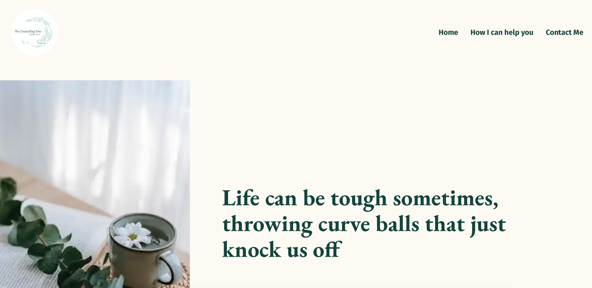
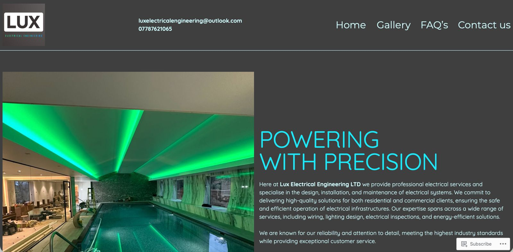

Why we created The Organised Types
The story behind our mission, our values, and why we believe organisation is a skill to be supported.
Read the storyOur gentle thoughts on business, systems, and our journey.
The story behind our mission, our values, and why we believe organisation is a skill to be supported.
Read the story
Your struggle isn't a personality flaw; it's a resource gap. Shift from chaos to calm.
Read the story
The Organised Types didn’t appear out of thin air. It was built from experience and hard lessons.
Read the storyHow clarity and structure support real business growth.

Building a calm, sustainable counselling practice from the ground up.
View the Story
Creating a professional online presence for a growing trade business.
View the Story